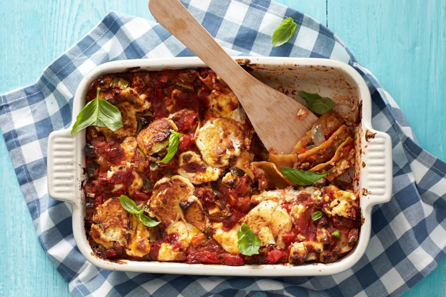

vegetarische lasagne

Ingrediants
- 2el traditionele olijfolie
- 600g koelverse Italiaanse roerbakgroente in voordeelzak
- 400g vegetarische basis rulstukjes
- 700g pastasaus pikant
- 12l asagnebladen
- 250g mascarpone
- 125g zachte geitenkaas 55+
preparation
- Verwarm de oven voor op 180 °C
- Verhit de olie in een hapjespan en bak hierin de Italiaanse roerbakmix 4 min. op middelhoog vuur
- Voeg het fijngehakt toe en bak 2 min
- Schenk de pastasaus bij het groente-gehaktmengsel
- Schenk de pastasaus bij het groente-gehaktmengsel
- Breng op smaak met peper en eventueel zout en kook nog 3 min
- Leg ⅓ lasagnebladen in de ovenschaal. Verdeel ⅓ van het groente-gehaktmengsel en ⅓ van de mascarpone in lepeltjes erover
- Maak zo nog 2 lagen
- Verdeel de geitenkaas over de lasagne
- Bak de lasagne in ca. 30 min goudbruin en gaar in het midden van de oven
- Bak de lasagne in ca. 30 min goudbruin en gaar in het midden van de oven